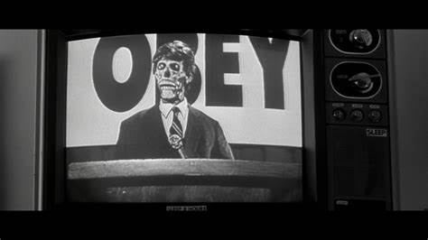
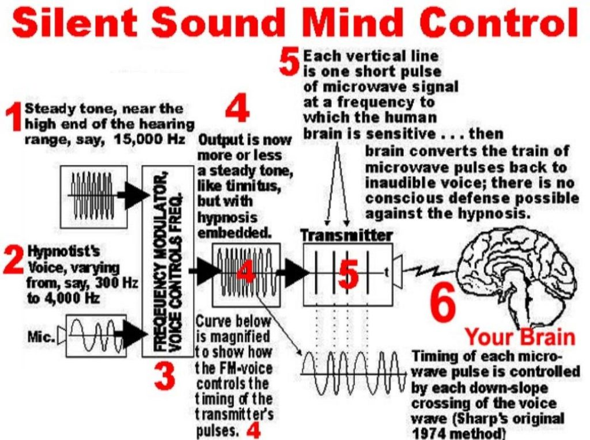
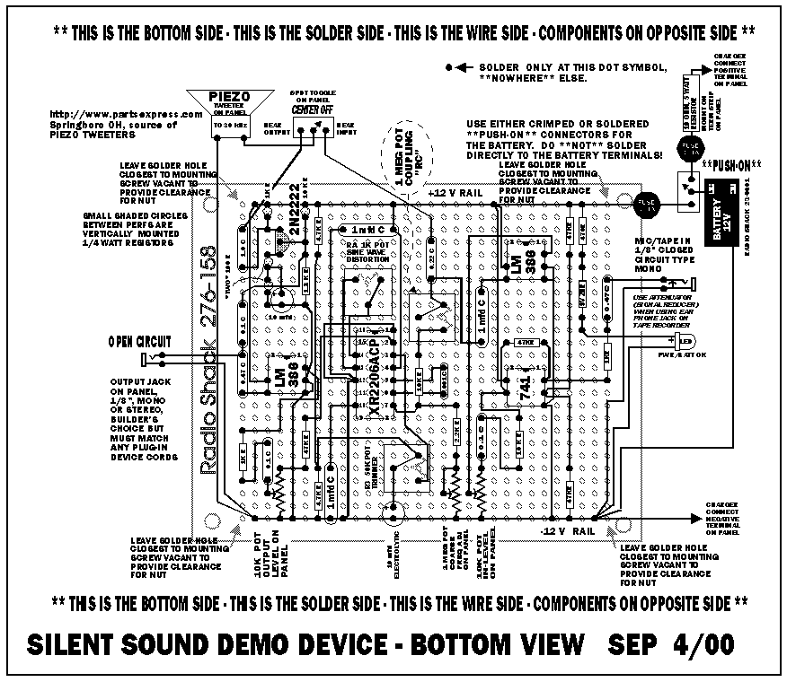
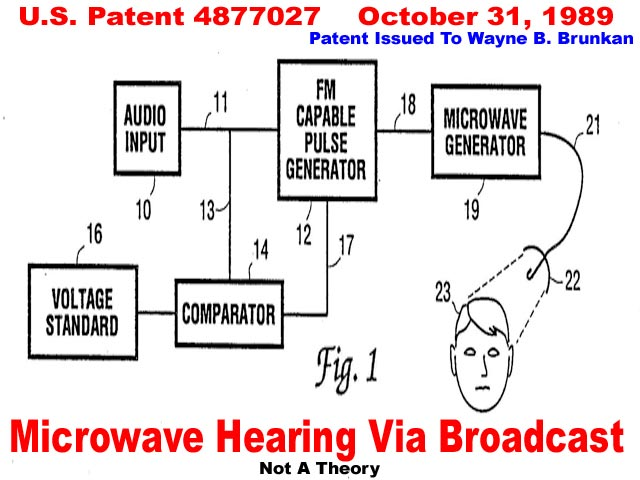
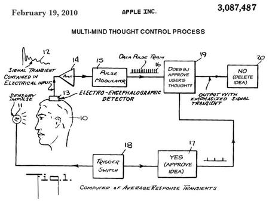
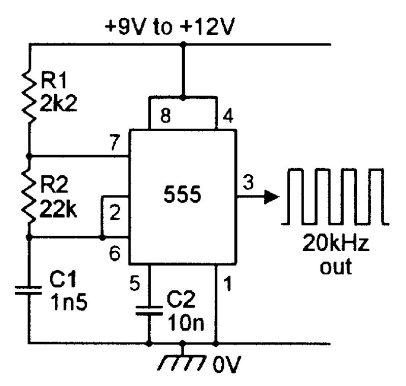
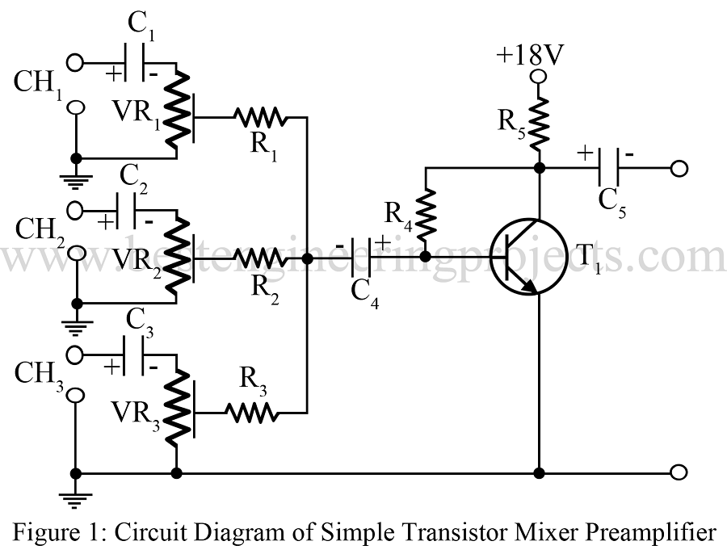
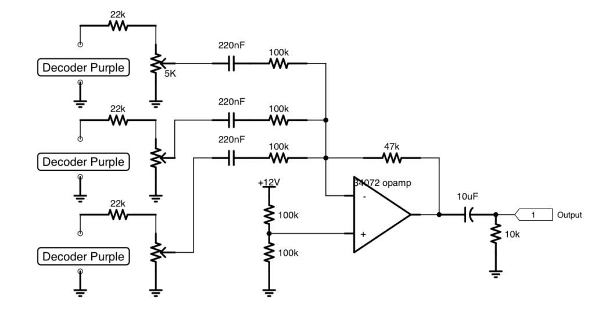
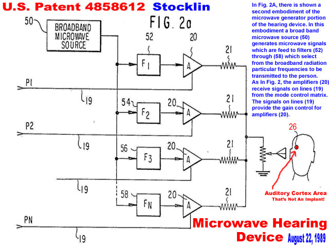
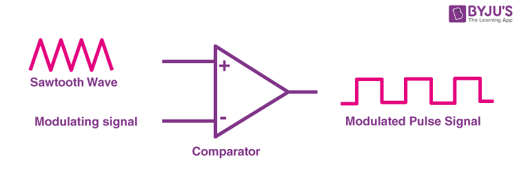

This article is about the creation of a mechanical / electrical device that will help you conduct affirmation prayer campaigns. What it will do is [1] scrub your mind form the electromagnetic waves trying to manipulate you and [2] replace it with affirmations, direction and MWI navigation channels of your own design. Huh? What am I talking about?
Scrub what?
From John Whitehead
“You see them on the street. You watch them on TV. You might even vote for one this fall. You think they’re people just like you. You’re wrong. Dead wrong.” — They Live
We are living in an age of mayhem, madness and monsters. Monsters with human faces walk among us. Many of them work for the U.S. government. What we are dealing with today is an authoritarian beast that has outgrown its chains and will not be restrained.
Through its acts of power grabs, brutality, meanness, inhumanity, immorality, greed, corruption, debauchery and tyranny, the government has become almost indistinguishable from the evil it claims to be fighting, whether that evil takes the form of terrorism, torture, disease, drug trafficking, sex trafficking, murder, violence, theft, pornography, scientific experimentations or some other diabolical means of inflicting pain, suffering and servitude on humanity.
We have let the government’s evil-doing and abuses go on for too long. We have bought into the illusion and refused to grasp the truth. We’re being fed a series of carefully contrived fictions that bear no resemblance to reality. We’re living in two worlds: the world we see (or are made to see) and the one we sense (and occasionally catch a glimpse of), the latter of which is a far cry from the propaganda-driven reality manufactured by the government and its corporate sponsors, including the media.
Indeed, what most Americans perceive as life in America—privileged, progressive and free—is a far cry from reality, where economic inequality is growing; pandemic lockdowns (both mental and physical), real agendas and real power are buried beneath layers of Orwellian doublespeak and corporate obfuscation; and “freedom,” such that it is, is meted out in small, legalistic doses by militarized police armed to the teeth.
The powers-that-be want us to feel threatened by forces beyond our control (terrorists, shooters, bombers, disease, etc.). They want us afraid and dependent on the government and its militarized armies for our safety and well-being. They want us distrustful of each other, divided by our prejudices, and at each other’s throats. Most of all, they want us to continue to march in lockstep with their dictates.
Obey. Resistance is futile.
Tune out the government’s attempts to distract, divert and befuddle us and tune into what’s really going on in this country, and you’ll run headlong into an unmistakable, unpalatable truth: the moneyed elite who rule us view us as expendable resources to be used, abused and discarded.
In fact, a study conducted by Princeton and Northwestern University concluded that the U.S. government does not represent the majority of American citizens. Instead, the study found that the government is ruled by the rich and powerful, or the so-called “economic elite.” Moreover, the researchers concluded that policies enacted by this governmental elite nearly always favor special interests and lobbying groups.
In other words, we are being ruled by an oligarchy disguised as a democracy, and arguably on our way towards fascism—a form of government where private corporate interests rule, money calls the shots, and the people are seen as mere subjects to be controlled.
Not only do you have to be rich—or beholden to the rich—to get elected these days, but getting elected is also a surefire way to get rich.
As CBS News reports, “Once in office, members of Congress enjoy access to connections and information they can use to increase their wealth, in ways that are unparalleled in the private sector. And once politicians leave office, their connections allow them to profit even further.”
In denouncing this blatant corruption of America’s political system, former president Jimmy Carter blasted the process of getting elected—to the White House, governor’s mansion, Congress or state legislatures—as “unlimited political bribery… a subversion of our political system as a payoff to major contributors, who want and expect, and sometimes get, favors for themselves after the election is over.”
Rest assured that when and if fascism finally takes hold in America, the basic forms of government will remain: Fascism will appear to be friendly. The legislators will be in session. There will be elections, and the news media will continue to cover the entertainment and political trivia.
Consent of the governed, however, will no longer apply.
Actual control will have finally passed to the oligarchic elite controlling the government behind the scenes. Sound familiar?
Our Rulers
Clearly, we are now ruled by an oligarchic elite of governmental and corporate interests. We have moved into “corporatism” (favored by Benito Mussolini), which is a halfway point on the road to full-blown fascism. Corporatism is where the few moneyed interests—not elected by the citizenry—rule over the many. In this way, it is not a democracy or a republican form of government, which is what the American government was established to be.
It is a top-down form of government and one which has a terrifying history typified by the developments that occurred in totalitarian regimes of the past: police states where everyone is watched and spied on, rounded up for minor infractions by government agents, placed under police control, and placed in detention (a.k.a. concentration) camps.
For the final hammer of fascism to fall, it will require the most crucial ingredient: the majority of the people will have to agree that it’s not only expedient but necessary. But why would a people agree to such an oppressive regime?
Fear
The answer is the same in every age: fear. Fear makes people stupid. Fear is the method most often used by politicians to increase the power of government. And, as most social commentators recognize, an atmosphere of fear permeates modern America: fear of terrorism, fear of the police, fear of our neighbors and so on. The propaganda of fear has been used quite effectively by those who want to gain control, and it is working on the American populace.
Despite the fact that we are 17,600 times more likely to die from heart disease than from a terrorist attack; 11,000 times more likely to die from an airplane accident than from a terrorist plot involving an airplane; 1,048 times more likely to die from a car accident than a terrorist attack, and 8 times more likely to be killed by a police officer than by a terrorist , we have handed over control of our lives to government officials who treat us as a means to an end—the source of money and power. As the Bearded Man warns in John Carpenter’s film They Live:
“They are dismantling the sleeping middle class. More and more people are becoming poor. We are their cattle. We are being bred for slavery.”
We are living the movie
In this regard, we’re not so different from the oppressed citizens in They Live, which was released more than 30 years ago, and remains unnervingly, chillingly appropriate for our modern age or Carpenter’s other dystopian films.
Best known for his horror film Halloween, which assumes that there is a form of evil so dark that it can’t be killed, Carpenter’s larger body of work is infused with a strong anti-authoritarian, anti-establishment, laconic bent that speaks to the filmmaker’s concerns about the unraveling of our society, particularly our government.
Time and again, Carpenter portrays the government working against its own citizens, a populace out of touch with reality, technology run amok, and a future more horrific than any horror film.
In Escape from New York, Carpenter presents fascism as the future of America.
In The Thing, a remake of the 1951 sci-fi classic of the same name, Carpenter presupposes that increasingly we are all becoming dehumanized.
In Christine, the film adaptation of Stephen King’s novel about a demon-possessed car, technology exhibits a will and consciousness of its own and goes on a murderous rampage.
In In the Mouth of Madness, Carpenter notes that evil grows when people lose “the ability to know the difference between reality and fantasy.”
And then there is Carpenter’s They Live, in which two migrant workers discover that the world is not as it seems. In fact, the population is actually being controlled and exploited by aliens working in partnership with an oligarchic elite. All the while, the populace—blissfully unaware of the real agenda at work in their lives—has been lulled into complacency, indoctrinated into compliance, bombarded with media distractions, and hypnotized by subliminal messages beamed out of television and various electronic devices, billboards and the like.
It is only when homeless drifter John Nada (played to the hilt by the late Roddy Piper) discovers a pair of doctored sunglasses—Hoffman lenses—that Nada sees what lies beneath the elite’s fabricated reality: control and bondage.
The true power
When viewed through the lens of truth, the elite, who appear human until stripped of their disguises, are shown to be monsters who have enslaved the citizenry in order to prey on them.
Likewise, billboards blare out hidden, authoritative messages: a bikini-clad woman in one ad is actually ordering viewers to “MARRY AND REPRODUCE.” Magazine racks scream “CONSUME” and “OBEY.”
A wad of dollar bills in a vendor’s hand proclaims, “THIS IS YOUR GOD.”
When viewed through Nada’s Hoffman lenses, some of the other hidden messages being drummed into the people’s subconscious include: NO INDEPENDENT THOUGHT, CONFORM, SUBMIT, STAY ASLEEP, BUY, WATCH TV, NO IMAGINATION, and DO NOT QUESTION AUTHORITY.

This indoctrination campaign engineered by the elite in They Live is painfully familiar to anyone who has studied the decline of American culture.
A citizenry that does not think for themselves, obeys without question, is submissive, does not challenge authority, does not think outside the box, and is content to sit back and be entertained is a citizenry that can be easily controlled.
In this way, the subtle message of They Live provides an apt analogy of our own distorted vision of life in the American police state, what philosopher Slavoj Žižek refers to as dictatorship in democracy, “the invisible order which sustains your apparent freedom.”
From the moment we are born until we die, we are indoctrinated into believing that those who rule us do it for our own good.
The truth is far different. Despite the truth staring us in the face, we have allowed ourselves to become fearful, controlled, pacified zombies.
We are manipulated zombies
We live in a perpetual state of denial, insulated from the painful reality of the American police state by wall-to-wall entertainment news and screen devices.
Most everyone keeps their heads down these days while staring zombie-like into an electronic screen, even when they’re crossing the street.
Families sit in restaurants with their heads down, separated by their screen devices and unaware of what’s going on around them.
Young people especially seem dominated by the devices they hold in their hands, oblivious to the fact that they can simply push a button, turn the thing off and walk away.
Indeed, there is no larger group activity than that connected with those who watch screens—that is, television, lap tops, personal computers, cell phones and so on.
In fact, a Nielsen study reports that American screen viewing is at an all-time high. For example, the average American watches approximately 151 hours of television per month. The question, of course, is what effect does such screen consumption have on one’s mind?
Media consumption
Psychologically it is similar to drug addiction. Researchers found that “almost immediately after turning on the TV, subjects reported feeling more relaxed, and because this occurs so quickly and the tension returns so rapidly after the TV is turned off, people are conditioned to associate TV viewing with a lack of tension.”
Research also shows that regardless of the programming, viewers’ brain waves slow down, thus transforming them into a more passive, nonresistant state. Historically, television has been used by those in authority to quiet discontent and pacify disruptive people. “
Faced with severe overcrowding and limited budgets for rehabilitation and counseling, more and more prison officials are using TV to keep inmates quiet,” according to Newsweek.
Given that the majority of what Americans watch on television is provided through channels controlled by six mega corporations, what we watch is now controlled by a corporate elite and, if that elite needs to foster a particular viewpoint or pacify its viewers, it can do so on a large scale.
If we’re watching, we’re not doing. The powers-that-be understand this. As television journalist Edward R. Murrow warned in a 1958 speech:
We are currently wealthy, fat, comfortable and complacent. We have currently a built-in allergy to unpleasant or disturbing information. Our mass media reflect this. But unless we get up off our fat surpluses and recognize that television in the main is being used to distract, delude, amuse, and insulate us, then television and those who finance it, those who look at it, and those who work at it, may see a totally different picture too late.
This brings me back to They Live, in which the real zombies are not the aliens calling the shots but the populace who are content to remain controlled.
When all is said and done, the world of They Live is not so different from our own. As one of the characters points out, “The poor and the underclass are growing. Racial justice and human rights are nonexistent.
They have created a repressive society and we are their unwitting accomplices. Their intention to rule rests with the annihilation of consciousness.
We have been lulled into a trance. They have made us indifferent to ourselves, to others. We are focused only on our own gain.”
We, too, are focused only on our own pleasures, prejudices and gains. Our poor and underclasses are also growing. Injustice is growing. Inequality is growing. Human rights is nearly nonexistent. We too have been lulled into a trance, indifferent to others.
Oblivious to what lies ahead, we’ve been manipulated into believing that if we continue to consume, obey, and have faith, things will work out. But that’s never been true of emerging regimes. And by the time we feel the hammer coming down upon us, it will be too late.
So where does that leave us?
The characters who populate Carpenter’s films provide some insight. Underneath their machismo, they still believe in the ideals of liberty and equal opportunity. Their beliefs place them in constant opposition with the law and the establishment, but they are nonetheless freedom fighters.
When, for example, John Nada destroys the alien hyno-transmitter in They Live, he delivers a wake-up call for freedom. As Nada memorably declares,
“I have come here to chew bubblegum and kick ass. And I'm all out of bubblegum.”
In other words: we need to get active. Stop allowing yourselves to be easily distracted by pointless political spectacles and pay attention to what’s really going on in the country.
The real battle between freedom and tyranny is taking place right in front of our eyes, if we would only open them. All the trappings of the American police state are now in plain sight. Wake up, America. If they live (the tyrants, the oppressors, the invaders, the overlords), it is only because “we the people” sleep.
The solution
Yah. You can’t change the world. But you change your little part of it.
This article describes the theory and the schematics for a device that will be useful in assisting people to control their mind.
It is based on mind control patents released to the public in the 1970’s. It is not for casual use, and nor should it ever be used to control others without their knowledge.
It will scrub your mind of the programming of others, and it will enable you to self program your mind, for your own purposes. This particular device is based on “Silent Sound” technology. You might be aware of this by the very well passed around graphic meme…

It’s an interesting technology.
Silent Sound
The Sound of Silence is a military-intelligence code word for certain psychotronic weapons of mass mind-control tested in the mid-1950s, perfected during the 70s, and used extensively by the “modern” US military in the early 90s, despite the opposition and warnings issued by men such as Dwight David Eisenhower. -Digital TV, H.A.A.R.P., GWEN Towers, Silent Sound & Mind
The Silent Sound Spread Spectrum (S.S.S.S.),
sometimes called “S‐quad” or “Squad”.
It was developed by Dr. Oliver Lowery, of Norcross, Georgia, and is described in U.S. Patent # 5,159,703,
“SILENT SUBLIMINAL PRESENTATION SYSTEM”,
Dated October 27, 1992.
The abstract for the patent reads:
“A silent communications system in which non‐aural carriers, in the very low or very high audio frequency range or in the adjacent ultrasonic frequency spectrum are amplitude‐ or frequency modulated with the desired intelligence and propagated acoustically or vibrationally, for inducement into the brain, typically through the use of loudspeakers, earphones or piezoelectric transducers. The modulated carriers may be transmitted directly in real time or may be conveniently recorded and stored on mechanical, magnetic, or optical media for delayed or repeated transmission to the listener.”
According to literature by Silent Sounds, Inc., it is now possible, using supercomputers, to analyze human emotional EEG patterns and replicate them, then store these “emotion signature clusters” on another computer and, at will, silently induce and change the emotional state in a human being.”
And of course, being so influential, the government would use it to control people…
…and they do.
And they have. And it is everywhere, and being implemented by every other person, company, media or government. Americans, and those in many nations of the West are terribly irradiated and manipulated.
People speak out
“My name is Trevor Constantine. I am, or was, a psychologist working for the military.
I had to quit.
I had no choice.
Not when I realized what I was part of. The American people have been kept in the dark about the true scientific progress of this country. Technologies of mass control exist that the public would never dream of. I know because I helped develop them.
They call it Psychotronic Warfare.
It’s a research program dealing with Mind Control. These bastards have finally decoded the human brain. Every emotion you have, every thought that we experience, they produce evoked intentional little electrical impulses firing in the brain. These forces have developed a weapon that can lock onto those thoughts, read them and then control them remotely.
They can control everything a person does.
Voices. That’s how they get you. The Spooks have developed a technology called Synthetic Telepathy.
They beam a frequency at you and let your skeleton conduct the voices like an antenna. It sounds like ghosts inside of you. They’ve targeted individuals for experimentation.” (audio)
Silent Sounds, Inc. states it is only interested in positive emotions, but the military is not so limited. That this is a U.S. Department of Defense project is obvious. Edward Tilton, President of Silent Sounds, Inc, says this about S‐quad in a letter dated December 13, 1996:
“All schematics, however, have been classified by the U.S. government and we are not allowed to reveal the exact details . . . . we make tapes and CDs for the German government, even the former Soviet Union countries! All with the permission of the U.S. State Department, of course . . . . the system was used all throughout Operation Desert Storm (Iraq) quite successfully.”
Ugh. Talk about a black hole…
This is one of those subjects that once you get involved in it, it sucks you in and takes you down, down, down into a morass of misdirection, emotionally charged literature, and technical papers. Ugh! Such as this…
Therapeutic "Behavioral Modification" program, compliance monitoring and feedback system https://www.google.com/patents/US6039688 Electric fringe field generator for manipulating nervous systems https://www.google.com/patents/US6081744 Brain wave inducing system (Creates, anger, depression, anxiety, etc) https://www.google.com/patents/US5954629 Brain wave inducing apparatus https://www.google.com/patents/US5330414 Method and apparatus for analyzing neurological response to emotion-inducing stimuli https://www.google.com/patents/US6292688 Multi-user remote health monitoring system with biometrics support (DNA is an antenna) https://www.google.com/patents/US8407063 Method and system for altering consciousness https://www.google.com/patents/US5123899 Subliminal acoustic manipulation of the Nervous System https://www.google.com/patents/US6017302 Method and apparatus for introducing subliminal changes to audio stimuli https://www.google.com/patents/US5215468 Apparatus for electric stimulation of auditory nerves of a human being https://www.google.com/patents/US5922016 Method and recording for producing sounds and messages to achieve Alpha and Theta brainwave states and positive emotional states in humans https://www.google.com/patents/US5586967 Method of inducing harmonious states of being (creates negative states as well) https://www.google.com/patents/US6135944 Ultrasonic speech translator and communications system (Beamed voices into head) https://www.google.com/patents/US5539705 Nervous system manipulation by electromagnetic fields from monitors https://www.google.com/patents/US6506148 Apparatus particularly for use in the determination of the condition of the vegetative part of the nervous system https://www.google.com/patents/US5522386 Method of inducing mental, emotional and physical states of consciousness, including specific mental activity, in human beings https://www.google.com/patents/US5213562 FM Theta-inducing audible sound, and method, device and recorded medium to generate the same https://www.google.com/patents/US5954630 Method and apparatus for inducing and establishing a changed state of consciousness https://www.google.com/patents/US5151080 Method and apparatus of varying the brain state of a person by means of an audio signal https://www.google.com/patents/US5135468 Method and apparatus for changing brain wave frequency (Create negative emotions) https://www.google.com/patents/US5036858 Multi-channel system for and a multifactorial method of controlling the nervous system of a living organism https://www.google.com/patents/US3967616 Method of inducing and maintaining various stages of sleep in the human being https://www.google.com/patents/US3884218 System and method for controlling the nervous system of a living organism https://www.google.com/patents/US3837331 Apparatus for the treatment of neuropsychic and somatic diseases with heat, light, sound and VHF electromagnetic radiation https://www.google.com/patents/US3773049 Hearing aid for producing sensations in the brain https://www.google.com/patents/US3766331 Electronic system for the stimulation of biological systems(Can create stimulation for riots) https://www.google.com/patents/US3727616 Art of transmitting electrical energy through the Natural medium patent https://www.google.com/patents/US787412 Dual use RF directed energy weapon and imager(Beamed pain ray to victims) https://www.google.com/patents/US8049173?dq=directed+energy+weapon&hl=en&sa=X&ved=0ahUKEwjiwbr90KrUAhXDTCYKHUkWA64Q6AEILTAB Outer space laser-microwave gun Tiangong satellite (Even while flying) https://www.google.com/patents/CN103373478A?cl=en&dq=microwave+weapon&hl=en&sa=X&ved=0ahUKEwjN286M16rUAhUGMSYKHbhjA60Q6AEIMjAC Systems and methods for altering brain and body functions and for treating conditions and diseases of the same (Brainwaves can be negatively altered) https://www.google.com/patents/US20090312817?dq=darpa+brain&hl=en&sa=X&ved=0ahUKEwio4dfp8qrUAhXI7SYKHSA3CbsQ6AEIKTAB Self-Focusing Antenna System (DNA is a Fractal Antenna used for 24/7/365 tracking) https://www.google.com/patents/US3174150 Solid-state non-lethal directed energy weapon (Covert torture of tissue and organs) https://www.google.com/patents/US7784390?dq=directed+energy+weapon&hl=en&sa=X&ved=0ahUKEwjK2peQz6rUAhVJJCYKHfZkC_sQ6AEIOzAD Nervous system excitation device (Can create community political riots) https://www.google.com/patents/US3393279 Sleep-inducting method and arrangement using modulated sound and sight https://www.google.com/patents/US3576185 Method for stimulating the falling asleep and/or relaxing behavior of a person and an arrangement therefore (A knockout beam) https://www.google.com/patents/US4573449 Method and apparatus for producing swept frequency-modulated audio signal patterns for inducing sleep https://www.google.com/patents/US3712292 Noise Generator and Transmitter (Creates noises of someone in home or doorbell ringing) https://www.google.com/patents/US4034741 Shadow Generating Apparatus (Illusion that someone has entered your home to kill you) https://www.google.ch/patents/US4508105 Method and apparatus for translating the EEG into music to induce and control various psychological and physiological states and to control a musical instrument (Used to create anxiety and agitation, etc., while listening to music.) https://prepareforchange.net/2015/09/15/the-voice-of-god-weaponized-mind-control-frequency-technology/
Some interesting patents
Yeah. More and more and more. It’s no wonder that everyone in the ‘States feel stressed. They are constantly being manipulated and beamed at with all sorts of manipulative wave forms…
U.S. Patent, #5,123,899. June 23, 1992 DESCRIPTION: A system for stimulating the brain to exhibit specific brain wave rhythms and thereby altering the subjects’ state of consciousness. U.S. Patent, #5,289,438. February 22, 1994 DESCRIPTION: A system for the simultaneous application of multiple stimuli (usually aural) with different frequencies and waveforms. Electro Magnetic Field (EMF) monitoring / interference is one of the most insidious and secretive of all methods used by the agencies. Similarly, EEG cloning feeds back the results of EMF monitoring in an attempt to induce emotional responses (e.g. fear, anger, even sleep, etc.) US Patent # 4,777,529 (October 11, 1988) Auditory Subliminal Programming System, Schultz, Richard M., et al. Abstract --- An auditory subliminal programming system includes a subliminal message encoder that generates fixed frequency security tones and combines them with a subliminal message signal to produce an encoded subliminal message signal which is recorded on audio tape or the like. A corresponding subliminal decoder/mixer is connected as part of a user's conventional stereo system and receives as inputs an audio program selected by the user and the encoded subliminal message. The decoder/mixer filters the security tones, if present, from the subliminal message and combines the message signals with selected low frequency signals associated with enhanced relaxation and concentration to produce a composite auditory subliminal signal. The decoder/mixer combines the composite subliminal signal with the selected audio program signals to form composite signals only if it detects the presence of the security tones in the subliminal message signal. The decoder/mixer outputs the composite signal to the audio inputs of a conventional audio amplifier where it is amplified and broadcast by conventional audio speakers. US Patent # 4,858,612 (August 22, 1989) Hearing Device,Stocklin, Philip L. Abstract --- A method and apparatus for stimulation of hearing in mammals by introduction of a plurality of microwaves into the region of the auditory cortex is shown and described. A microphone is used to transform sound signals into electrical signals which are in turn analyzed and processed to provide controls for generating a plurality of microwave signals at different frequencies. The multi-frequency microwaves are then applied to the brain in the region of the auditory cortex. By this method sounds are perceived by the mammals which are representative of the original sound received by the microphone. US Patent # 4,877,027 (October 31, 1989) Hearing System, Brunkan, Wayne B. Abstract --- Sound is induced in the head of a person by radiating the head with microwaves in the range of 100 megahertz to 10,000 megahertz that are modulated with a particular waveform. The waveform consists of frequency modulated bursts. Each burst is made up of 10 to 20 uniformly spaced pulses grouped tightly together. The burst width is between 500 nanoseconds and 100 microseconds. The pulse width is in the range of 10 nanoseconds to 1 microsecond. The bursts are frequency modulated by the audio input to create the sensation of hearing in the person whose head is irradiated. US Patent # 3,393,279 (July 16, 1968) Nervous System Excitation Device, Flanagan, Giles P. Abstract --- A method of transmitting audio information via a radio frequency signal modulated with the audio info through electrodes placed on the subject's skin, causing the sensation of hearing the audio information in the brain. US Patent # 3,629,521 (January 8, 1970) Hearing Systems, Puharich, Henry K. Abstract --- The present invention relates to the stimulation of the sensation of hearing in persons of impaired hearing abilities or in certain cases persons totally deaf utilizing RF energy. More particularly, the present invention relates to a method and apparatus for imparting synchronous AF or "acoustic" signals and so-called "transdermal" or RF signals. Hearing and improved speech discrimination, in accordance with one aspect of the present invention, is stimulated by the application of an AF acoustical signal to the "ear system" conventional bio-mechanism of hearing, which is delivered to the brain through the "normal" channels of hearing and a separate transdermal RF electrical signal which is applied to the "facial nerve system" and is detectable as a sensation of hearing. Vastly improved and enhanced hearing may be achieved. PSYCHO Acoustic Projector U.S. Patent, #3,566,347, February 23, 1971 DESCRIPTION: A high directional beam radiated from a number of transducers and modulated by a speech, code, or noise beat signal. It may take the form of a radiator mounted on a vehicle, aircraft or satellite. PURPOSE: To produce aural/psychological disturbances and partial deafness. US Patent # 3,576,185 (April 27, 1971) Sleep-Inducing Method & Arrangement using Modulated Sound & Light, Meseck, Oscar & Schulz, Hans R. Abstract --- N/A US Patent # 3,568,347 (February 23, 1971) Psycho-Acoustic Projector, Flanders, Andrew Abstract --- A system for producing aural psychological disturbances and partial deafness in the enemy during combat situations. US Patent # 3,647,970 (March 7, 1972) Method and System for Simplifying Speech Waveforms, Flanagan, G. Patrick Abstract --- A complex speech waveform is simplified so that it can be transmitted directly through earth or water as a waveform and understood directly or after amplification. US Patent # 3,773,049 (November 20, 1973) Apparatus for Treatment of Neuropsychic & Somatic Diseases with Heat, Light, Sound & VHF Electromagnetic Radiation, L. Y. Rabichev, et al. Abstract --- N/A US Patent # 3,766,331 (October 16, 1973) Hearing Aid for Producing Sensations in the Brain, Zink, Henry R. Abstract --- A pulsed oscillator or transmitter supplies energy to a pair of insulated electrodes mounted on a person's neck. The transmitter produces pulses of intensity greater than a predetermined threshold value and of a width and rate so as to produce the sensation of hearing without the use of the auditory canal, thereby producing a hearing system enabling otherwise deaf people to hear. US Patent # 3,727,616 (March 17, 1973) Electronic System for Stimulation of Biological Systems, Lenskes, H. Abstract --- A receiver totally implanted within a living body is inductively coupled by two associated receiving coils to a physically unattached external transmitter which transmits two signals of different frequencies to the receiver via two associated transmitting coils. One of the signals from the transmitter provides the implanted receiver with precise control or stimulating signals which are demodulated and processed in a signal processor network in the receiver and then used by the body for stimulation of a nerve, for example, while the other signal provides the receiver with a continuous wave power signal which is rectified in the receiver to provide a source of electrical operating power for the receiver circuitry without need for an implanted battery. US Patent # 3,712,292 (January 23, 1973) Method & Apparatus for Producing Swept FM Audio Signal Patterns for Inducing Sleep, Zentmeyer, J. Abstract --- A method of producing sound signals for inducing sleep in a human being, and apparatus therefor together with representations thereof in recorded form, wherein an audio signal is generated representing a familiar, pleasing, repetitive sound, modulated by continuously sweeping frequencies in two selected frequency ranges having the dominant frequencies which occur in electrical wave patterns of the human brain during certain states of sleep. The volume of the audio signal is adjusted to mask the ambient noise and the subject can select any of several familiar, repetitive sounds most pleasing to him. US Patent # 3,837,331 (September 24, 1974) System & Method for Controlling the Nervous System of a Living Organism, Ross, S. Abstract --- A novel method for controlling the nervous system of a living organism for therapeutic and research purposes, among other applications, and an electronic system utilized in, and enabling the practice of the invented method. Bioelectrical signals generated in specific topological areas of the organism's nervous system, typically areas of the brain, are processed by the invented system so as to produce an output signal which is in some way an analog of selected characteristics detected in the bioelectrical signal. The output of the system, typically an audio or visual signal, is fed back to the organism as a stimulus. Responding to the stimulus, the organism can be trained to control the waveform pattern of the bioelectrical signal generated in its own nervous system. US Patent # 3,835,833 (September 17, 1974) Method for ObtainingNeurophysiological Effects, Limoge, A. Abstract --- A method and apparatus for obtaining neurophysiological effects on the central and/or peripheral systems of a patient. Electrodes are suitably positioned on the body of the patient and a composite electric signal is applied at the electrodes. The composite signal is formed by the super positioning of two signals: a first signal which is a rectified high-frequency carrier modulated in amplitude to about 100 percent by substantially square-shaped pulses whose duration, amplitude and frequency are chosen according to the neurophysiological effects desired, and a second signal which has a relatively white noise spectrum. The mean value of the first electric signal has a predetermined sign which is opposite the sign of the mean value of the second electric signal. US Patent # 3,884,218 (May 20, 1975) Method of Inducing& Maintaining Various Stages of Sleep in the Human Being, Monroe, Robert A. Abstract --- A method of inducing sleepin a human being wherein an audio signal is generated comprising a familiar pleasing repetitive sound modulated by an EEG sleep pattern. The volume of the audio signal is adjusted to overcome the ambient noise and a subject can select a familiar repetitive sound most pleasing to himself. Malech's Remote Brainwave-Altering Machine US Patent Number 3,951,134 (April, 1976) - Represents an invention by Robert G. Malech Apparatus and method for remotely monitoring and altering brain waves Abstract -- Apparatus for and method of sensing brain waves at a position remote from a subject whereby electromagnetic signals of different frequencies are simultaneously transmitted to the brain of the subject in which the signals interfere with one another to yield a waveform which is modulated by the subject's brain waves. The interference waveform which is representative of the brain wave activity is re-transmitted by the brain to a receiver where it is demodulated and amplified. The demodulated waveform is then displayed for visual viewing and routed to a computer for further processing and analysis. The demodulated waveform also can be used to produce a compensating signal which is transmitted back to the brain to effect a desired change in electrical activity therein.
The Demo device
The electronics and the functional board layout isn’t all that difficult. ANy one with the most basic soldering skills can make their own device. As this image clearly shows…

But do not freak out.
Technology is a tool. It can be used for good purposes or bad. In this case we will use this technology for our own purposes which would be to improve and enhance our ability to navigate the MWI.
Other systems

And this…

What we are going to do…
Now, where this technology was promoted, and used to control others. We are going to take this technology to construct a machine that we can use on ourselves to help us reprogram our own minds away from other influences. And so let’s look at the basic outline of our intentions. What we will do is…
Create a steady tone
We will create a steady tone on the high end of the hearing range. The normal human hearing range of a healthy individual is usually in-between 20Hz and 20KHz with the higher frequencies gradually fading during a lifetime. Below 20Hz are called infrasounds and above 20000Hz are called ultrasounds. This is easily done. You take a cheap 555 IC chip, add some resistors and capacitors and attach it to a battery and you have a tone.

Create a custom affirmation campaign
We will create a custom affirmation campaign or document just for this device, and record the audio track in MP3 format. In so doing we will read it from the FIRST PERSON perspective.
- I am calm, cool and collected.
- I have a great life and I am very satisfied with it.
- I am healthy and eat good, healthy and delicious food often.
Etc. Etc. We will then record this as an MP3 file format.
Construct a voice modulator circuit
We will construct a voice modulator circuit. With it, the two signals would be merged together as one singular signal. Thus the reading of the affirmations would be overlaid over the carrier tone. It’s a common and normal well-used circuit. Here’s one with transistors…

Here’s one with ICs…
The overlaid signal
From that voice modulator circuit will be an overlay of the steady carrier tone and the affirmation campaign. This is the signal that will be the primary driver for the system.
Compress the signal
[5] We will then compress that signal. Then we will pulse it at a target frequency. There are multiple brainwave frequencies or patterns of brain activity. Most of the recorded information the the brain is received through the senses and is encoded in electrical impulses. All parts of the brain communicate with each other, and this is done through a vast array of nerve cells – the neurons – which work like small “electrical” stations. Their membrane presents an electrochemical charge on the external surface, releasing it again and again in the form of what is called cyclical electrical potential. This is what is commonly known as brain waves. These waves then travel along neural protrusions called axons and dendrites to other neurons. The nerve cells act in unison to generate thoughts, movements, and information that spread through very fine networks, between the various parts of the brain and the organs of action.Target Frequencies
With the following be the different target frequencies that we can utilize; Alpha Waves: 8 Hz – 12 Hz In the alpha wave state, you’ll most likely feel awake but also simultaneously quite relaxed and without a loss of brain function like you would if you were very tired. When you get up in the morning and just before you fall asleep, you are naturally in this state. It’s interesting to note that when you close your eyes your brain naturally starts producing more alpha waves, however there are varying degrees of the alpha wave state and when you really drop in deep it’s far more powerful and profound than what you might feel or experience just from closing your eyes. Deep alpha wave states are frequently seen in and experienced by meditators. Alpha activity also heightens your imagination, visualization, memory, learning and concentration and is correlated with a decrease in stress and anxiety. Beta Waves: 12 Hz – 27 Hz In the beta state you are essentially wide awake. Beta brainwaves are associated with normal waking consciousness and a heightened state of alertness, logic and critical reasoning. This is the dominant mental state most people are in during the day and the majority of their waking lives. Although this state tends to be uneventful, don’t underestimate its importance. Many people who lack sufficient beta activity may experience mental or emotional disorders such as depression or ADHD, and low SMR production (a sub-range of beta at 12-15 Hz) may be related to insomnia. While Beta brainwaves are important for effective functioning throughout the day, they also can translate into stress, anxiety and restlessness. The voice of beta can be described as being that nagging little inner critic that gets louder the higher you go into the range. On the other hand, stimulating beta waves in under active individuals can improve energy levels, concentration, attentiveness and emotional stability, however, most people notice more benefit from shifting their brainwaves into other less frequently experienced states such as alpha, delta, theta and gamma. Delta Waves: 0.2 Hz – 3 Hz Delta is the slowest band of brainwaves and is experienced in deep, Stage 4, dreamless sleep. When your brain is in a full delta wave state, your body is healing and repairing itself and resetting its internal clocks. You don’t actually dream in this state and are more or less completely unconscious. Delta has also been seen in very deep states of meditation as well. Gamma Waves: 27 Hz and up The Gamma wave state is associated with expanded awareness, creativity, activation of the pineal gland, heightened intuition, enhanced mental clarity and focus, deep feelings of peace, joy and oneness, formation of ideas, language and memory processing, and various types of learning. As such, this is generally a highly desirable state to be in. Unsurprisingly, Gamma waves have been identified as a characteristic brainwave pattern of regular meditators and monks and are present when we are dreaming, although they can arise in normal waking consciousness as well. However, research has shown that by practicing forms of meditation and mindfulness regularly, you can literally rewire your brain to experience Gamma waves more frequently. Theta Waves: 3 Hz – 8 Hz Theta brainwaves are present during deep meditation, relaxation and light sleep, including the dream state. Theta has been shown to be a very receptive brainwave state that has proven useful for hypnotherapy, as well as self-hypnosis using recorded affirmations and suggestions. They are also strongly correlated with bursts of creativity, inspiration and vivid daydreams and visualizations. According to brainwave experts, it is at the Alpha-Theta border, from 7 Hz to 8 Hz, where the optimal range for visualization, mind programming and using the creative power of your mind begins. Clearly there are great benefits to be had by shifting your brainwaves into highly specific states, allowing your consciousness to experience reality through different ‘lenses’ that help it focus in positive, expansive and often times deeply healing ways. The exercises, technologies and nutraceuticals below have all been proven to shift brainwave patterns and improve trans-hemispheric communication in the brain, allowing for an expanded experience of consciousness.
Using the target frequencies.
The pulse of the “message” carrier wave must match that of the target frequencies of the person listening. For instance if you know that you will be awake and alert, mowing the grass or washing dishes, then your target wave would be in the Alpha range. If, however, you were meditating or resting, it would be in the beta wave range.
Guarantee of hitting the precise target range
There are two techniques to guarantee that the target frequencies are matching that of the “message” carrier wave. [A] Broadcast the signal in all target frequencies simultaneously.

or, [B] Have a bio-feedback loop that measures your brain frequencies and then adjusts the pulse width of your message carrier wave.Down slope control of the voice wave
We process the signal so that the pulse width is controlled by the down-wave trigger.

We utilize calming music to overlay over the system
Instead of simply having what amounts to “white noise” beamed into your headphones, we will add a soundtrack of calming and soothing sounds. Perhaps hemi-sync.
Output is a set of headphones
The output would ideally be a set of headphones, but a set of speakers can be employed as well. However, if you use speakers, anyone who hears the sounds form the speakers will be influenced by the embedded carrier waves and affirmation pulses.
Conclusion
I know that the vast bulk of the readership doesn’t even understand the schematics. But don’t worry about that. This is just a preliminary introduction article. This is a rudimentary discussion on the creation of a device that will automatically program your mind based upon whatever you want it to be programmed to. It relies on the beaming of audio frequencies that will reprogram your brain. In future articles, I [1] will prove a DIY do-it-yourself instructions on how to make one. Further, [2] I will also provide a kit with all the parts, and later on still, [3] I will provide already assembled devices for purchase. I hope that this all will be beneficial to you all.
/wp:post-content wp:paragraph . /wp:paragraph wp:paragraph /wp:paragraph wp:list